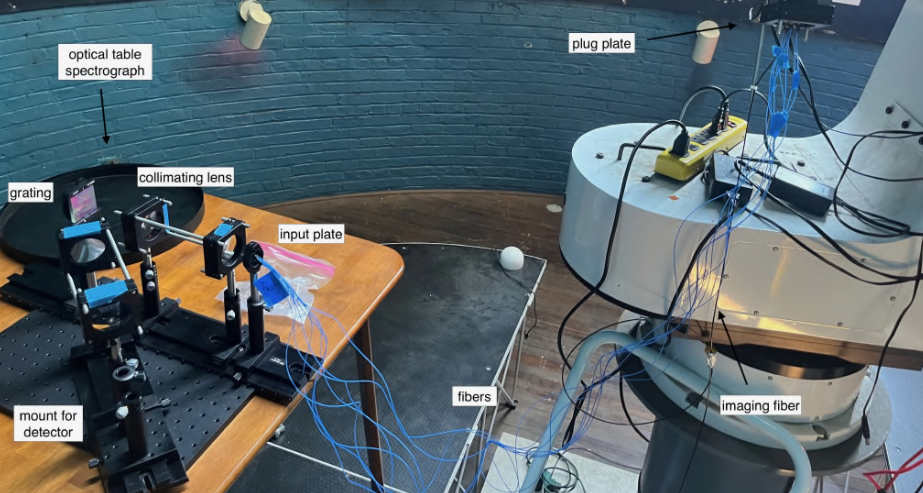
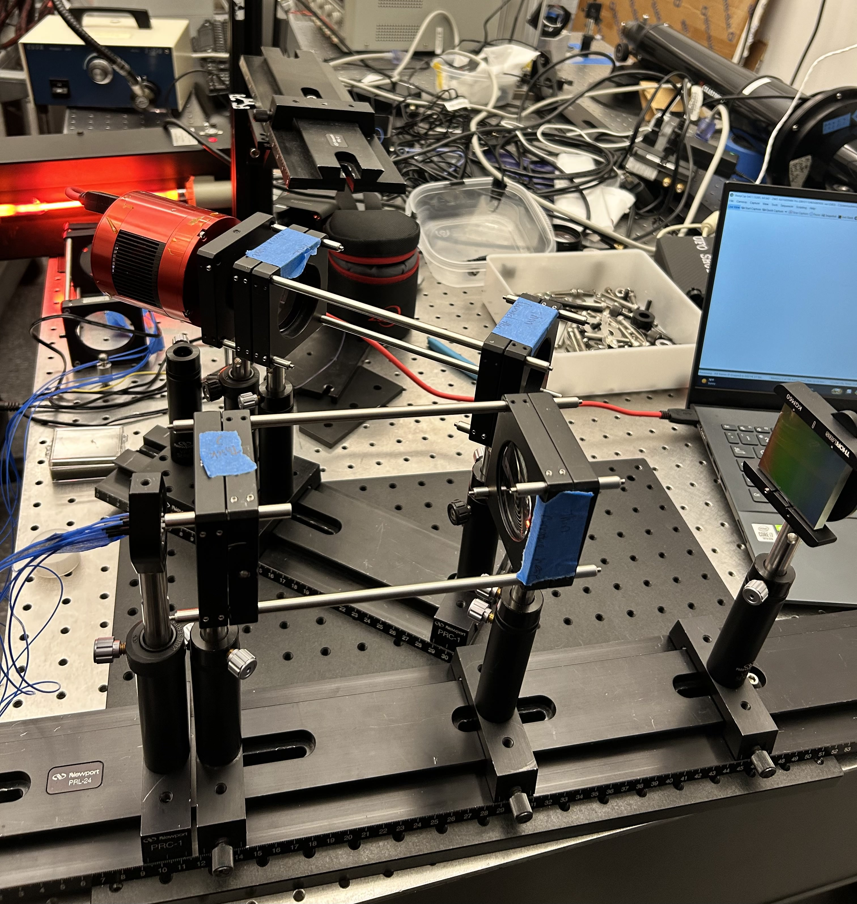
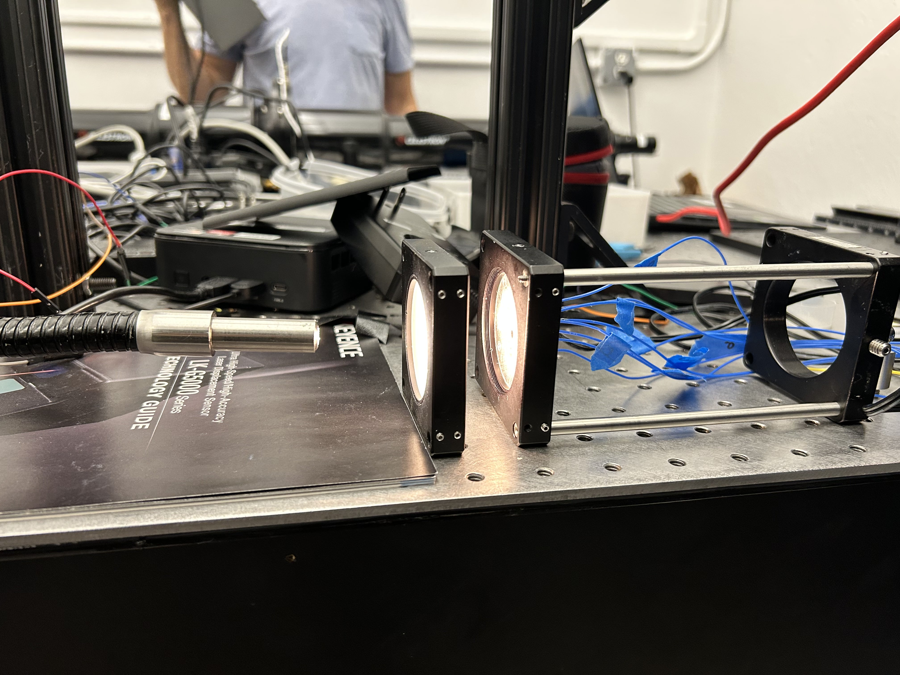

Engineering Projects
Fiber Optic Spectroscopy
Skills: Fiber Optics, Spectra Data Analysis, CAD
Short description: Some friends and I tried our hands at upgrading the Pupin Rutherford Dome Telescope through multi-object spectroscopy. We had just installed a field-derotator on the telescope, and we thought this would be a pretty cool use of it!

Our Design Hooked Up To The Telescope
What I did: Besides the prelimanary research phase, the fabrication was split into
a few categories: the fibers, the plug plates, and the spectrograph. The fibers were simple, but tedious --
they consisted of measuring, cutting, polishing, and attaching ferrules. Making sure all the fibers all
exactly the same length in cutting was tedious but simple enough -- the real fun is polishing.
We ran the fibers through a 6 stage polishing process, with only a few fallen soldiers along the way
(they are super fragile okay). The plug plates were created using a projection of our target star field
onto our telescope's focal plane, plus some distortion calculations from mirror position. We drilled some
holes into our aluminum sheet, plugged those fibers into there, and had ourselves an imaging device.
The spectrograph materials (along with a bunch else, plus some extremely generous guidance) were given
to us by Prof. Schiminovich, which we assembled and calibrated in his lab. We tested our fibers out,
took some pictures for analysis (see paper for both), and, satistfied, took it up to the dome for testing!
Our results were.. mixed. Our system was able to observe point sources like Arcturus, but our target star field
was eluding us. I assume design factors were at play here, most prominantly a misalignment of ferrule/fiber
positioning at the focal plane. Previous testing had hinted at this, and our best estimates is a focal plane
misalignment of 3-5mm.
However, not all was lost, and we still obtained some interesting calibration measurements using white light and
a neon lamp. You can check out the specifics in the paper, but essentially we isolated bands of spectra and calculated
the dispersion relations, finding the wavelength centers and reciprocal linear dispersions.

Neon lamp seen in background

Technical details: Describe the tools, methods, materials, or design choices involved.
Results: Describe the outcome — what worked, what you measured, or what you learned.
Full writeup:
Project Two Name
Skills: CAD, Manufacturing, Materials Testing
Short description: One or two sentences describing what this project is and why you built it.

Caption for this photo
What I did: Describe your specific role and contributions to the project.
Technical details: Describe the tools, methods, materials, or design choices involved.
Results: Describe the outcome — what worked, what you measured, or what you learned.
Full writeup:
Project Three Name
Skills: Embedded Systems, C++, PCB Design
Short description: One or two sentences describing what this project is and why you built it.

Caption for this photo
What I did: Describe your specific role and contributions to the project.
Technical details: Describe the tools, methods, materials, or design choices involved.
Results: Describe the outcome — what worked, what you measured, or what you learned.
Code: View on GitHub